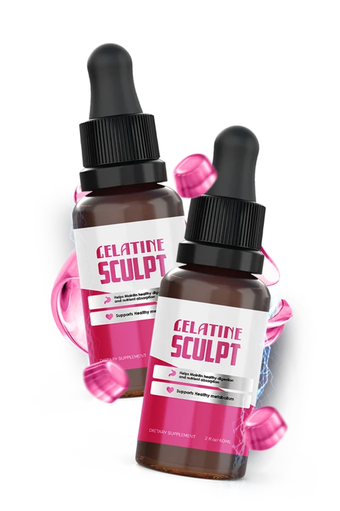
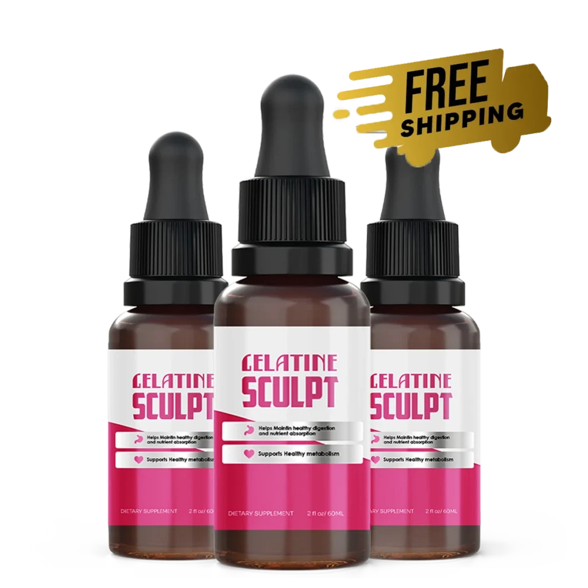

Gelatine Sculpt™ is a premium, natural weight-support formula created to help your body return
to an efficient fat-burning state without strict diets, injections, or harsh stimulants.
Designed to work in harmony with your body’s metabolism, it supports appetite balance, energy
levels, and long-term weight management, making weight loss feel achievable, steady, and
sustainable.
Unlike temporary appetite suppressants, Gelatine Sculpt addresses the underlying causes of
stubborn weight gain, including slow metabolism, frequent cravings, bloating, and unstable blood
sugar. By targeting these key areas, it helps your body convert stored fat into energy while
naturally reducing overeating and emotional hunger.
With regular use, Gelatine Sculpt™ serum helps promote smoother body contours, improved
digestion, and steady daily energy without the fatigue or crashes often linked to extreme
dieting.
Gelatine Sculpt is a natural weight-support formula designed to help your body achieve a
healthy, efficient fat-burning state without extreme diets, injections, or harsh stimulants.
Known as a trusted fat-burning supplement, it works in harmony with your body’s metabolism
to support appetite control, energy levels, and long-term weight management.
Instead of offering a quick-fix or temporary appetite suppressant, Gelatine Sculpt addresses
the root causes of stubborn weight gain, such as:

By supporting these key areas, Gelatine Sculpt™ serum helps your body use stored fat as fuel naturally, while promoting smoother body contours, improved digestion, and sustained energy. Safe for both men and women and available on the Gelatine Sculpt Official Website, this formula offers a simple, natural, and risk-free way to take control of your weight loss journey while boosting metabolism and overall vitality.
Gelatine Sculpt is a natural fat-burning supplement that works with your body’s
systems to make
weight loss easier, safer, and more sustainable. Unlike harsh stimulants or extreme diet plans,
this formula focuses on supporting your metabolism, appetite, and energy levels naturally,
allowing your body to burn fat more efficiently over time.
The secret behind Gelatine Sculpt weight loss support lies in its multi-action approach. First,
it helps boost your metabolism, encouraging your body to convert stored fat into energy instead
of letting it accumulate. This process supports steady, long-term fat loss, even in areas that
are often resistant, such as the belly, thighs, and hips.
Second, Gelatine Sculpt™ serum helps balance appetite and reduce cravings, making it easier to
manage portions and avoid emotional eating. Ingredients like Berberine and Green Tea Extract
work together to support stable blood sugar levels, helping reduce sudden hunger and sugar
cravings naturally.
Additionally, Gelatine Sculpt supports digestion and reduces bloating, so your body feels lighter
and functions more efficiently. With improved nutrient absorption and anti-inflammatory support, it
addresses common obstacles that often slow down weight loss.
By targeting metabolism, appetite, digestion, and energy at the same time, Gelatine Sculpt helps
retrain your body to stay in a natural fat-burning mode. Regular use results in improved body
composition, increased energy levels, and a smoother, more toned physique all without harsh
stimulants or rebound weight gain. Available on the Gelatine Sculpt Official Website, it’s a safe,
natural, and effective solution for anyone seeking natural weight loss and a metabolism booster.
The Gelatine Sculpt™ formula is a carefully crafted blend of natural ingredients designed to support weight loss, metabolism, and overall wellness. Unlike other quick-fix products, this fat-burning supplement targets the root causes of stubborn weight gain while promoting sustained, healthy results.
A powerful metabolism booster that supports thermogenesis, helping your body convert stored fat into energy while providing smooth, natural energy throughout the day. It also aids in controlling cravings and maintaining balanced blood sugar levels.
Helps promote a feeling of fullness, reducing unnecessary snacking. It also supports lean muscle development and collagen production, helping maintain skin firmness and improve body contours during weight loss.
A natural anti-inflammatory ingredient that supports digestion, reduces bloating, and enhances nutrient absorption. By lowering internal inflammation, Turmeric helps your metabolism function more efficiently.
Known for its ability to support healthy blood sugar levels and insulin sensitivity, Berberine helps regulate appetite, reduce sugar cravings, and promote long-term metabolic balance.
Gelatine Sculpt is a premium fat-burning supplement serum designed to support natural weight loss and healthy metabolism. This advanced formula works with your body’s natural rhythms to promote efficient fat burning, balanced appetite control, and steady energy without extreme diets, injections, or harsh stimulants.
Acts as a natural metabolism booster, helping your body burn calories more efficiently for steady Gelatine Sculpt weight loss results.
Encourages gentle fat-burning activity throughout the day without overstimulation.
Helps reduce cravings and emotional eating for easier portion control.
Supports cellular energy production without jitters or sudden crashes.
Helps your body use stored fat effectively, promoting leaner body composition.
Carefully formulated natural serum designed for safe, consistent natural weight loss and long-term metabolism support.
This fat-burning supplement serum supports natural weight loss and metabolism support but is not intended to diagnose, treat, cure, or prevent any disease.
Claim Your Discounted Gelatine Sculpt While Stocks Last!
Gelatine Sculpt™ serum is manufactured in FDA-registered and GMP-certified facilities, which follow strict quality, hygiene, and safety standards required for supplement production. While the FDA does not approve dietary supplements individually before they are sold, manufacturing in regulated facilities helps ensure that Gelatine Sculpt is produced with proper testing, ingredient verification, and quality control.
The formula is created using carefully selected ingredients designed to support natural weight loss and healthy metabolism without harsh stimulants. When used according to instructions, Gelatine Sculpt metabolism support serum is considered a safe wellness product for most healthy adults.
To ensure the best experience:
Learn More About Gelatine Sculpt™
Learn how Gelatine Sculpt™ serum blends premium botanicals and essential nutrients in a
research-driven formula to support healthy metabolism, balanced appetite, and steady natural
energy all in one place.